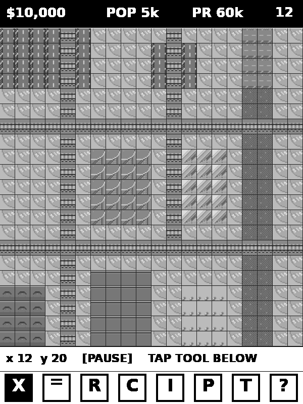

Exact 600x800 e-ink frame: black header band with paper-white text, 20x21 grid of 30px tiles (tone-targeted per tile type — water sits dark, grass light, roads near-black with light dashes), status strip, 8-tool toolbar. Real classic Micropolis tiles, rebaked for greyscale.
